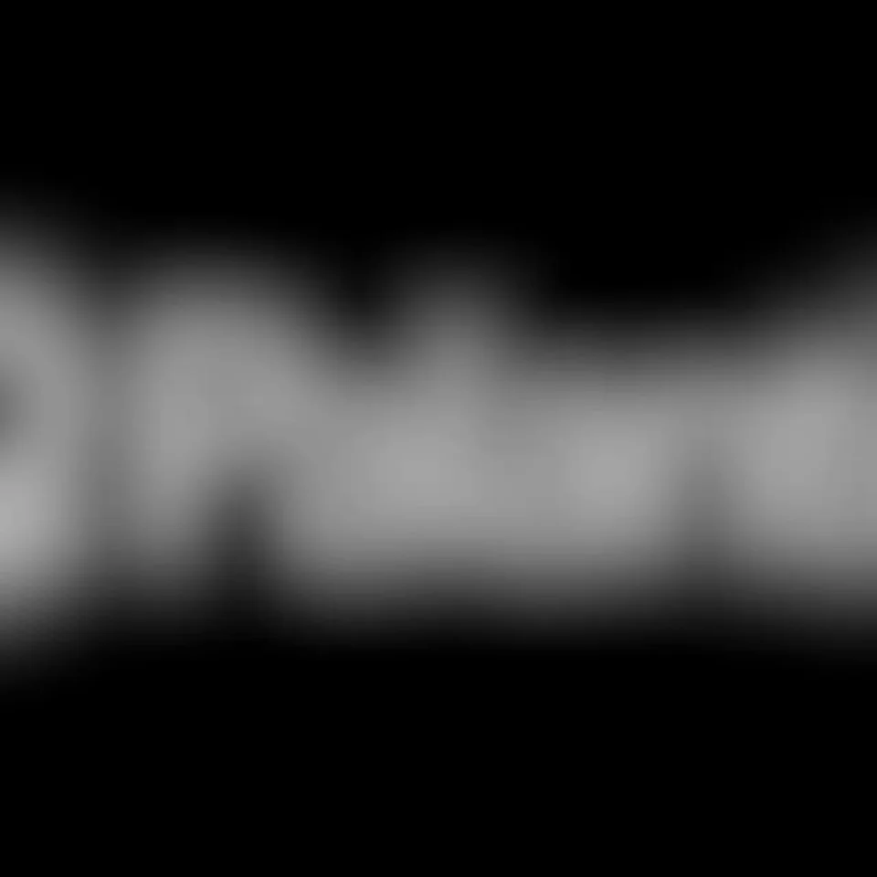
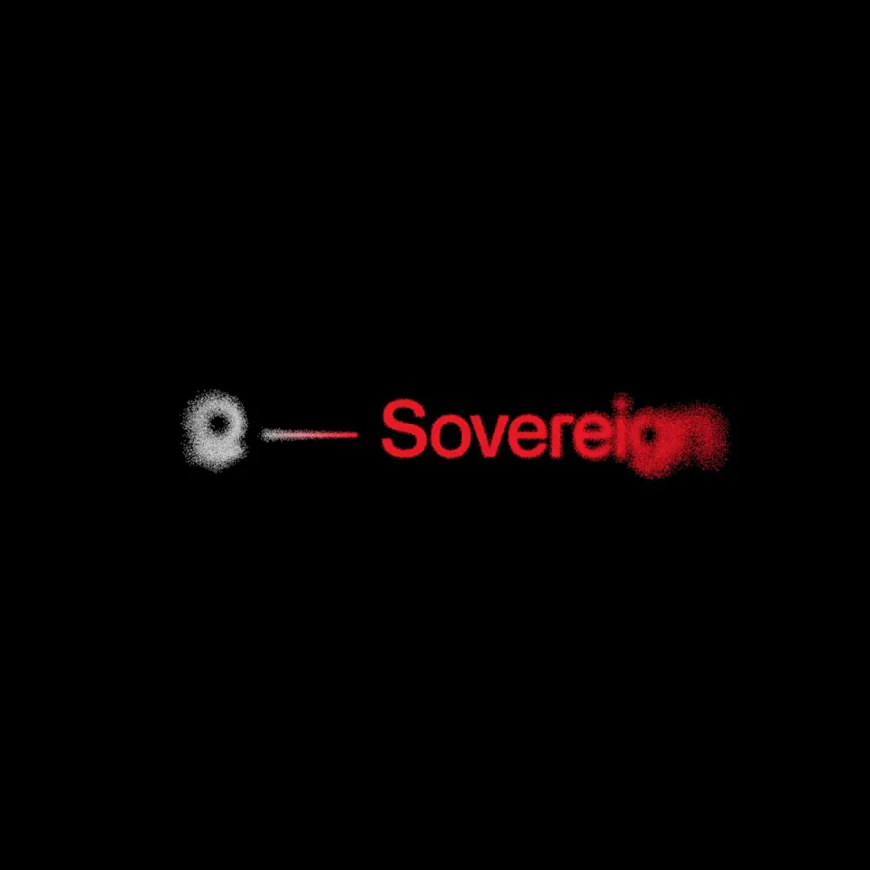

Palantir / V166
Own the means of production. Revolt with us.
把极近的标志与红字快速拉回到小尺度组合；黑场留下大量空白，完成一次短促品牌亮相。
构图与编排 可播放 · 可替换内容
整体编排规则示例
查看 HTML 源码
<!doctype html><html lang="zh-CN"><meta charset="utf-8"><meta name="viewport" content="width=device-width,initial-scale=1"><title>Own the means of production. Revolt with us. · sequence</title><style>html,body{margin:0;width:100%;height:100%;overflow:hidden;background:#000000}canvas{display:block;width:100%;height:100%;object-fit:contain}</style><body data-mode="sequence"><canvas width="1000" height="600"></canvas><script src="data.js"></script><script src="common.js"></script><script src="scene.js"></script><script src="bridge.js"></script></body></html>画面元素白色环形标红色字标拖尾颗粒
MOTION LANGUAGE
动作与构图
局部动作 · 构图规则
01
先超出画幅，再落回中心
先超出画幅，再落回中心规则示例
查看 HTML 源码
<!doctype html><html lang="zh-CN"><meta charset="utf-8"><meta name="viewport" content="width=device-width,initial-scale=1"><title>Own the means of production. Revolt with us. · sequence</title><style>html,body{margin:0;width:100%;height:100%;overflow:hidden;background:#000000}canvas{display:block;width:100%;height:100%;object-fit:contain}</style><body data-mode="clip" data-start="0" data-end="1.35"><canvas width="1000" height="600"></canvas><script src="data.js"></script><script src="common.js"></script><script src="scene.js"></script><script src="bridge.js"></script></body></html>开始让环与文字局部大于画面，边缘带模糊拖尾。拉远时图标、横线与字标成为一个整体，最终宽度只占画面约四分之一。
02
黑底只保留两种信息色
环形图标为白色，字标为红色；拖尾沿运动轴展开，停稳后消退。字号变化比横移更强，收尾留出辨认名称的静止时间。
03
替换时保留短词结构
适合单个标志加一至两个词的名称。长标题先另做短品牌名，不在这段两秒多的亮相里塞入副标题。
SEQUENCE
段落与节奏
点击段落，定位到上方编排示意。


画面参考 · 离散静帧
KEEP THE RELATIONSHIPS
制作其他主题
- 替换单个标志与短品牌词；保留近景→拉远锁定。
制作约束
白色环形标 / 红色字标 / 拖尾颗粒
- 开始让环与文字局部大于画面，边缘带模糊拖尾。拉远时图标、横线与字标成为一个整体，最终宽度只占画面约四分之一。
- 环形图标为白色，字标为红色；拖尾沿运动轴展开，停稳后消退。字号变化比横移更强，收尾留出辨认名称的静止时间。
- 适合单个标志加一至两个词的名称。长标题先另做短品牌名，不在这段两秒多的亮相里塞入副标题。